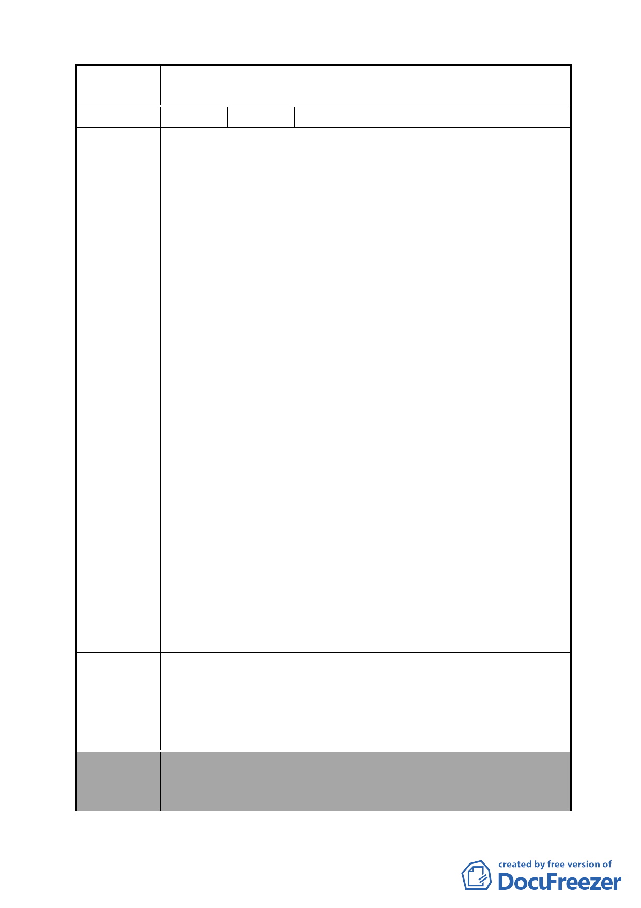

案 名 變更臺北市南港區鐵路地下化沿線土地主要計畫案
陳情理由
建議辦法
人）
1.台電公司罔顧市民權益，未經任何協商或召開說明會，逕定
於南港區人口稠密處設置 161KV 超高壓變電所，本地社區
居民及南港區各里民自始反對，經各里居民分別抗議後，台
電公司仍一意孤行，不願面對民意要求另尋妥善場所，其推
諉拖延之態度令人不齒。
2.依據 98.3.9.立院質詢時，台電公司董事長陳貴明表示，去年
10 月到今年 2 月民生用電年減 8.6％、工業用電年減 16.8％，
台電評估今年整體用電量將較去年減少 2.35％。而依據目前
「變更台北市南港區鐵路地下化沿線土地主要計畫案」其預
定設置地點由台電倉庫中心北移至鐵道用地與東新街交叉
口，仍屬高人口稠密度區域，且未來鄰近地區之發展，將以
住商混合區為主，少有工業用電之需要，又何苦自欺欺人，
堅持要在本區建設 161KV 超高壓變電所。
3.本里全體住戶重申堅決反對在住家隔鄰興建 161KV 超高壓
變電所，嚴重危害生命財產之安全。並提出以下建議：
（1）為供應南港地區日漸增加之工業用電 (南港站三鐵共構
由為其中供電需求最為急迫者)，變電所應設置靠近該區
以便供電，將有效減少超高壓配線之費用，同時，不經
過人口稠密地區避免擴大民怨。
（2）變電所應建置在人口稠密度較低之山區或大型公園採地
下化設計，以避免危害鄰近住戶造成民怨。
（3）變電所自規劃迄今，經數次變更興建地點，但未體恤民
意遷至偏遠山區，反以施工成本及便利為考量規劃於社
區旁，視南港區居民為次等公民。
4.懇請 貴單位體恤南港區全體居民之心聲，協調台電公司遷
移至上述地點或更適宜之地方，以造福居民百姓，不勝感
荷！
緣因台灣電力公司擬將玉成超高壓變電所設置於人口稠密之
處，枉顧鄰近住戶生命財產安全，顯有失當；懇請 貴單位
協調台電公司重行研議，將其遷移至人口稠密度較低之山區
或大型公園地下層，實為至盼。
委員會
決議
本案除文字誤繕應再作修正外，其餘依市府本次會議所送修
正計畫書內容通過。
（依市府本次會議所送修正計畫書，本案將變電所用地自本
- 66 -